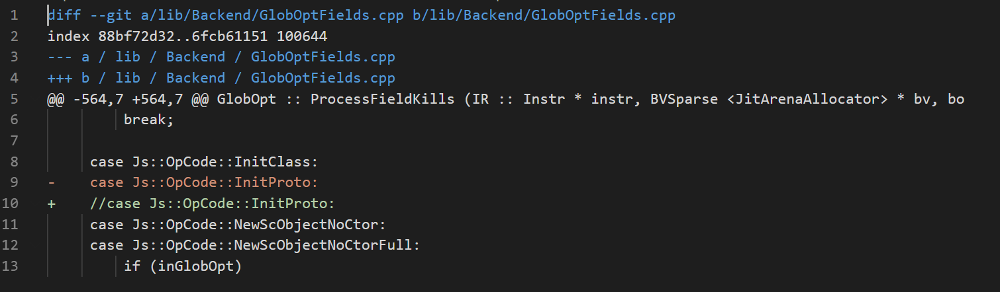
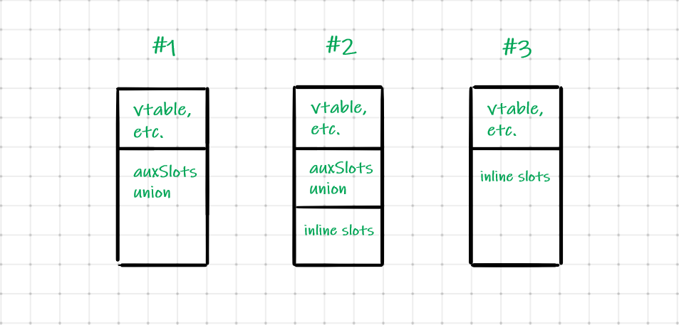
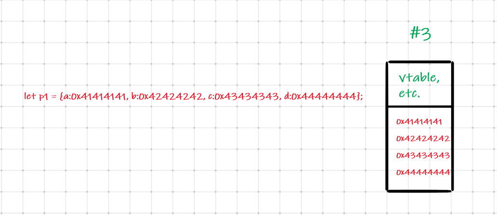
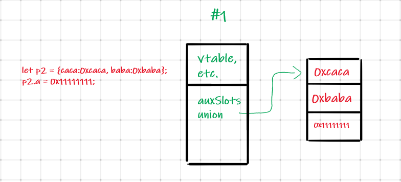
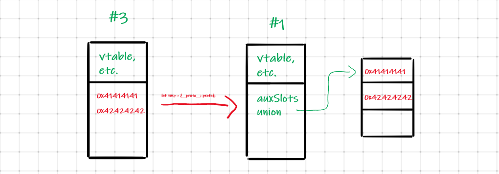
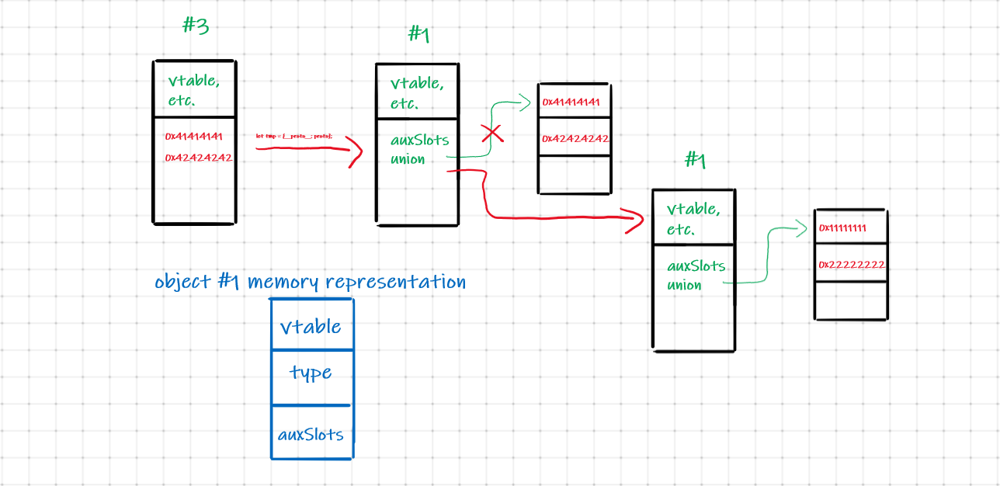
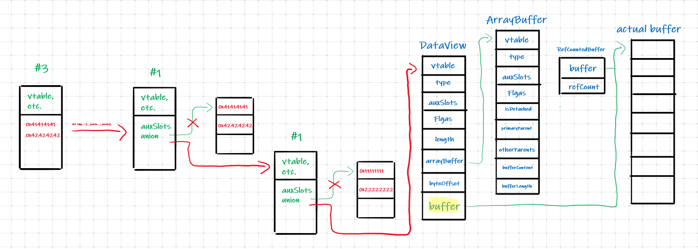

ChakraCore was a challenge at Trend Micro CTF 2019 Quals in Exploit category, worth 400p.
I have attempted this challenge during the CTF but endedup solving it with an unintended solution. Now, one year later, I decided
to challenge myself to solve the task the proper way.
Since we will be in a Microsoft context,
I decided to take advantage of this and use this beautiful CSS library ( https://botoxparty.github.io/XP.css/ ) that offers a visual look similar to that of the Windows XP operating system.
Without further ado, enjoy the writeup! 🙂
📜Descritpion:
Chakra is the JavaScript engine, developed by Microsoft, which is used to power Microsoft Edge. ChakraCore represents a majority of Chakra made open-source ( https://github.com/microsoft/ChakraCore ) .
For this challenge, we are given 3 files:
ch
libChakraCore.so
patch.diff
Challenge Files:
⚠️Patch:
The patch file is very small (you can see it in the File tab). By quickly looking at it, we observe that the Js::OpCode::InitProto case has been removed.
What does this mean? We don't know yet, we could take a look at the source code and understand the side effects of the patch, but before we dive into the huge source code, I propose we Google it.
Among the first search results we can find many results that contain the text CVE-2019-0567. If we search for this keyword, specifically, we can find this web page.
It is a POC for the specific CVE. Looking at the bug report we can see that the vulnerability was discovered bu the legend Lokihardt. He states that:
NewScObjectNoCtor and InitProto opcodes are treated as having no side effects, but actually they can have via the SetIsPrototype method of the type handler that can cause transition to a new type. This can lead to type confusion in the JITed code.
In the PoC, it overwrites the pointer to property slots with 0x1000000001234.
So we are dealing with a JIT vulnerability. Basically, what happens is that the JIT compiler thinks that if we set an object's __prototype__ there will be no side effects, which is not the case.
If we run the POC, we can see the following SegFaul:

🔬Debugging:
Because the executable is missing debugging information, I will build a new one including the patch.
# Clone project
$ git clone https://github.com/microsoft/ChakraCore.git
$ cd ChakraCore
# Checkout to a commit where the patch is applicable
git checkout e79d68a8c0f9d31b4074bbf6d7a9013693f142ec
# Apply the patch
$ patch -p1 < patch.diff
# Compile chakra
$ ./build.sh --static --debug -j=4
Alright, now we got an executable with symbols. However, comparing ChakraCore to v8, there is no %DebugPrint() equivalent. So how can we prin information about our objects?
A method which worked well for me was to set a breakpoint at WScriptJsrt::EchoCallback(void*, bool, void**, unsigned short, void*) and thus, whenever I will call console.log(obj) I will hit the breakpoint inside the debugger.
Once we hit the breakpoint, we have to print arguments[1] and that's where the address of our object will be.
🗺️Memory Layout:
Before we dive into the exploitation part, I would like to introduce the memory layout of JavaScript Objects.
As described in the source code, JavaScript Objects can have one of the following 3 shapes:

Let's consider the following object. In the memory it will have memory layout #3.

Interestingly, when we add new members to the object, it will change it's layout to #1.

💣Exploitation:
From the POC we know that we are dealing with a JIT type confusion, but what is a type confusion vulnerability and what is JIT?
just-in-time (JIT) compilation is a way of executing computer code that involves compilation during execution of a program – at run time – rather than before execution.
A well prezented explanation of JIT Compilers can be found at this link, but the keypoint to remember is that whenever there is a function called many times, it is considered hot, and the jit will attempt to compile it and execut machine code directly, thus improving the performance.
The type confusion vulnerability, like the name states, is a vulnerability where the program thinks it's dealing with a type A, when the reality is that it is dealing with a type B. Usually type confusion vulnerabilities can lead to other vulnerabilitiess such as: buffer overflows, use-after-free, etc.
Here you can find more information on type confusion vulnerabilities.
function opt(o, proto, value) {
o.b = 1;
let tmp = {__proto__: proto};
o.a = value;
}
function main() {
for (let i = 0; i < 2000; i++) {
let o = {a: 1, b: 2};
opt(o, {}, {});
}
let o = {a: 1, b: 2};
opt(o, o, 0x1234);
print(o.a);
}
main();
Now that we have cleared this, let's take a closer look at the POC. We see that there are 2 functions: main and opt.
The function opt is called 2000 times in the for loop. In other words, it attempts to make the function HOT.
The function opt receives 3 parameters:
o - object with 2 properties
proto - empty object used to set the __prototype__ of another object tmp
value - empty object
Like we've said earlier, JIT thinks that Js::OpCode::InitProto has no side effects. Bu if we analyze closely with the debugger, we can see that the layout of the object is actually changed.

Now, when we attempt to access property obj.a we will access obj.auxSlots. So in the POC we can see that auxSlots is ovrerwritten with value 0x1234 (which internally is represented as follows: 0x1000000001234, the 1 bit represents a non-pointer value.
Alright, now that we know how the vulnerability is triggered and what happens at the memory level, let's see how can we profit from this to achieve arbitrary read and write.
If we create a new object of type #1 and use it to overwrite the auxSlots pointer, we will end up with something like this:

Now, our target is to overwrite the auxSlots pointer frmo the second object with a DataView. But as we can see in the blue figure, the layout of the object maps property a to the vtable and property b to the type member. Thus we need to include a new member c in order to overwrite the auxSlots pointer.
dv1 = new DataView(new ArrayBuffer(0x100));
o.c = dv1;
We will obtain the following:

Perfect! Now as we can see, what is interesting for us is the buffer pointer. If we manage to set it to an arbitrary memory area, we will be able to perform arbitrary read / write. However, there are a few issues:
1. Our 2nd object only has 2 members and we are only able to overwrite either the vtable or the type property.
2. If we could overwrite the buffer pointer, because it would contain the 1 bit set because it is not a pointer.
So, how can we overcome these issues?
For the first issue, an easy bypass would be to simply allocate an object with at least 8 properties:
Now, if we perform obj.opt = VALUE we corrupted the buffer pointer.
Lastly, the 2nd issue can be treated as follows: overwrite the buffer pointer with another DataView and then use the first one to overwrite the buffer pointer of the 2nd DataView.
Thus, we can achieve arbitrary READ and WRITE by contsantly adjusting the buffer pointer of the second DataView and then writing or reading from there.
READ primitive
function read(where1, where2){
dv1.setUint32(7*0x8, where1, true);
dv1.setUint32(7*0x8+0x4, where2, true);
let ret = '0x'
ret += dv2.getUint32(4, true).toString(16)
ret += dv2.getUint32(0, true).toString(16);
return ret
};
Alright, so right now, we have the ability to read from everywhere and write from everywhere, can can we pop a shell?
Well, we first need a memory leak. We can obtain that very easy by reading the vtable pointer of the 2nd DataView. With this leak we are able to locate the GOT entry of the free function which is located at offset 0x00000000023354d0.
From there, we can leak the libc address.
Once we got a libc leak, we can use a neat trick which is to overwrite the free_hook with the address of the system function and then call console.log("/bin/sh\x00") which will trigger the free_hook because of the following snippet.
As always, I hope this post was useful to you and you found something useful or new in it.
If not, it will be just a reminder for me when I'll encounter similar problems. 😅